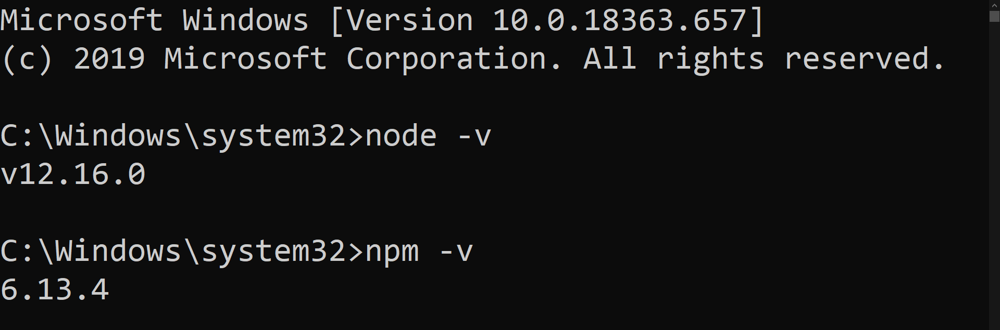

Open nodejs.html for the markup | Images are taken from: JS Course by Jonas Schmedtmann
Download and Install Node.js from here (download the one with "Recommended For Most Users"). After that, check if Node.js has been installed in the system properly by typing in the commands in terminal or the command prompt, as shown in the screenshot below.

The output of those two commands shown above, should be the version numbers of Node.js and NPM as shown
above. If that's not the case, then there was some problem while installation of Node.js and therefore,
we might've to re-install Node.js.
After that, we now create a package.json file for our project using the command line. Note:
We have to be in the respective project folder to create the package.json file. We simply
type in: npm init command in the command prompt (or terminal) and the terminal will ask
about the project name, description, entry point, etc as shown
below in the screenshot. Fill them up as shown in the screenshot below.
We can clearly see that package.json file has been created. We can also see the content of
package.json file. We can see that the file reflects the data that we gave as input when
creating the package.json file. We will get to know more about package.json
file in-detail, a little bit later.
We will now install Webpack using NPM. To install Webpack, we use the following command:
npm install webpack --save-dev in the terminal as shown below (we might see some warning(s)
, but that's not to fret about. If there are errors, then we need to run the command as administrator/
superuser).
In the command, npm install webpack --save-dev, "--save-dev" means that we
save Webpack as Development Dependency. We can see that in our package.json
file shown below, that "webpack" is saved in the package.json file inside the
"devDependencies" field with its version number.
There are two type of Node.js packages. The first one's are libraries & frameworks, stuff like that, and
the others are development tools. Libraries like React or jQuery they all are really
dependencies, because we use the code from React, jQuery, etc, in our product/app. But something like
Webpack is really just a development tool, and therefore, it's saved inside the package.json
in the "devDependencies" field. Now, imagine if we wanted to use something like jQuery
(which is an actual dependency from which we import actual code and use the code in our project), then
we install it using the following command: npm install jquery --save. Note that in this
command, we just used "--save" instead of "--save-dev", because jQuery is a
library dependency, and not a development dependency. We can see see the command in action below.
Now we can see the contents of package.json below and see that "jquery" is
inside the "dependencies" field as shown below, because jQuery is a library and not a tool.
Now, the package.json file has all the information regarding the dependencies, development
dependencies, etc, in our project. Now that's very important, because if we want to move this project to
another computer or work with another person on the same project, then everyone's on the same page by
simply looking into the package.json file. Everyone will get to know the dependencies being
used in the project just by having a glance in the package.json file. It is also important
to create a package.json file because it allows us to install all of our dependencies
automatically even if we don't have the node_modules directory in our project. The
node_modules folder is where all our packages (dependencies or development dependencies) reside i.e., it
will have all the dependencies for the dependencies that we installed in our project. For instance,
Webpack and jQuery themselves have so many dependencies, so the node_modules folder also contains the
dependencies of the dependencies we installed for our project.
Now, if we want to share our project to someone else, we need not share the node_modules
folder. Because all the required details are there inside the package.json file. So anyone
who's having the project files (without the node_modules folder) along with the
package.json file, he/she can simply run npm install command, and all the
required devDependencies and dependencies will be installed in the project folder in the node_modules
folder. We will illustrate that in the screenshots below. We will delete the node_modules folder first,
and then just type in npm install in the directory where our project files are (along with
package.json file), and we will see that the node_modules folder will be created in our
project's directory automatically, where all the dependencies requuired for the project, will reside.
One last thing is that we can also uninstall the packages. In our project we don't really have a need for
jQuery, so we go ahead and uninstall it as shown in the screenshot below, using the following command:
npm uninstall jquery --save
We can see that the package.json reflects that "jquery" has been uninstalled, as it is not
present inside the "dependencies" field of the package.json file as shown below.
A final thing to know is, the packages that we installed till now (i.e., Webpack and jQuery using the
--save-dev and --save respectively) are locally installed. It means that they
are installed only for this particular project. But we can also install packages globally, so that those
packages will be accessible everywhere in our computer. Right now, the "webpack" devDependency only works
inside the project, but if we want to install it globally and access it everywhere, we could also do that
.
We will now see how we can install packages globally. We will install the Live Server
package globally using the following command: npm install live-server --global (instead of
--global we could've als used -g). Live Server allows us to create a simple and
local web server to serve some static websites.
Now we can run the command live-server from anywhere in the system, and in the respective
folder, a live local webserver is created on the loopback address (127.0.0.1) on port 8080 as shown
below.